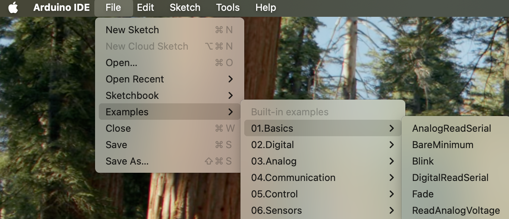

Lab 1 Assignment: First Contact With The Instrument¶
Introductory Material¶
Purpose¶
In the first class you will meet the temperature-control instrument that we will build toward during the semester. It uses an Arduino, a thermistor, a thermoelectric cooler, an H-bridge driver, a power supply, a heat exchanger, an oscilloscope, and laptop software.
Before class, your job is to arrive ready to connect to an Arduino, upload a simple program, and think clearly about safety.
Vocabulary¶
- Arduino Uno: the microcontroller board that reads voltages and sends control signals.
- Serial Monitor: the Arduino IDE window that shows text sent from the Arduino to the laptop.
- Digital output: a pin that the Arduino can set near 0 V or 5 V.
- Oscilloscope: an instrument that displays voltage versus time.
- Thermistor: a resistor whose resistance changes with temperature.
- TEC/Peltier element: a bidirectional thermal actuator. It can heat one side and cool the other depending on current direction.
- H-bridge: an electronic circuit that lets the low-power Arduino control the amount and direction of current from a high-power supply through a load.
- PWM: pulse-width modulation, a way to control average power using fast on/off switching.
Safety Boundary For Lab 1¶
In Lab 1, the Arduino is powered by USB. The TEC power supply stays off.
You may inspect the TEC, H-bridge, heat exchanger, thermistor, and safety cutoff, but you will not power the TEC during the first lab. This is deliberate. The course begins by verifying the measurement and communication chain before applying actuator power.
Pre-Class Assignment¶
Before Class¶
Complete these steps before the first meeting.
- Install the Arduino IDE on the laptop you plan to use in lab, if possible.
- Bring a USB cable or adapter that can connect your laptop to an Arduino Uno.
- Read this assignment and write down any question that feels basic or confusing.
- Skim the vocabulary list below.
If you cannot install software before class, come anyway. We will handle setup in lab.
Pre-Class Questions¶
Write short answers before class. These are not meant to be polished.
- What is the difference between a sensor and an actuator?
- Why should the TEC power supply remain off while we are only testing Arduino upload and serial communication?
- What do you expect an Arduino digital output to look like on an oscilloscope?
- If software says "toggle every 500 ms," what period and frequency would you expect to measure?
Bring To Class¶
- Laptop, if you have one.
- Lab notebook or note-taking device.
- Questions.
In-Class Assignment¶
What You Will Do¶
You will:
- Identify the instrument's sensor, actuator, controller, power stage, thermal load, and safety cutoff.
- Upload Arduino sketches from the Arduino IDE.
- Open Serial Monitor and read heartbeat messages from the Arduino.
- Probe an Arduino digital output with an oscilloscope.
- Measure voltage levels and timing.
- Compare the measured signal to the code that generated it.
Programming Task¶
Read the Overview. Introduction to arduino. Read the section on Hardware for temperature control (there are no exercises here). It contains a description of the setup with links to details about the components. Do the arduino tutorial.
- Write a sketch to measure the temperature. First, read the voltage across the thermistor. Compare the results with and without averaging the voltage over 100 measurements. Can you see the effect of averaging? Can you determine the digitization error? ChatGPT does an amazing job at writing this type of code. Use it.
- Next convert the averaged voltage to temperature using the thermistor equation.
- Set up a potentiometer that adjusts voltage between 0-5V. Measure the output on an oscilloscope. Hook up the voltage to an LED and dim and brighten the light.
- Set up a potentiometer that adjusts voltage between 0-5V. Convert the analog voltage to a digital signal. Use the digital signal to set the PWM levels so that 5V corresponds to 100% duty cycle and 0V to 0% duty cycle. Measure the PWM output on an oscilloscope. Use the PWM to control the intensity of the LED.
- Configure two of the PWM Arduino outputs to control the H-bridge. Use the computer to set the PWM. Measure the PWM output on an oscilloscope.
- Control the temperature of the TEC by wiring up the H-bridge. Use the arduino Serial Plot to monitor the temperature.
In class,
- Launch Arduino IDE
- From the examples section, run Blink.ino

- Change the duty cycle from the default 1:1 to 10:1 and to 1:10. Did it work?
- Now run another example, AnalogReadSerial.ino
-
Wire up the trim-pot as instructed. View the results on the Serial Monitor and Serial Plotter. Slow down the time intervals between measurements to something sensible. Rotate the trim plot and see if the graphical plot makes sense. What range of voltage do you input into the analog pin from the trim-pot? What range of numbers does the Arduino analog read report back to you as you vary voltage?
-
sets one digital output pin as an output,
- turns that pin HIGH and LOW repeatedly,
- also drives the built-in LED,
- prints a heartbeat message to Serial Monitor at
9600baud, - lets you predict the period and frequency of the signal before measuring it.
You should expect to revise the sketch after the first upload. Debugging board selection, port selection, baud rate, and timing is part of the lab.
Post-Class Assignment¶
What To Submit¶
Submit a short lab note containing:
- A labeled photo or sketch of the apparatus.
- The Arduino board and serial port you used.
- The Arduino sketch you wrote.
- Three lines copied from Serial Monitor.
- An oscilloscope screenshot or hand sketch of the waveform.
- A small table with
V_low,V_high, period, and frequency. - A paragraph answering: What did the oscilloscope show that the Serial Monitor did not?